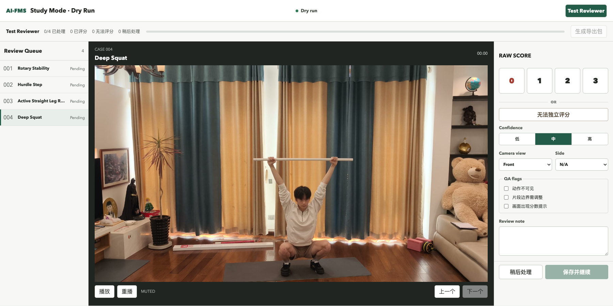
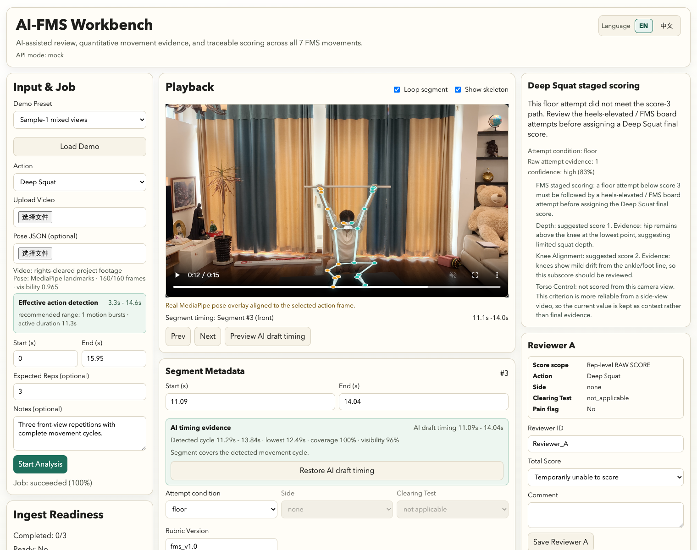
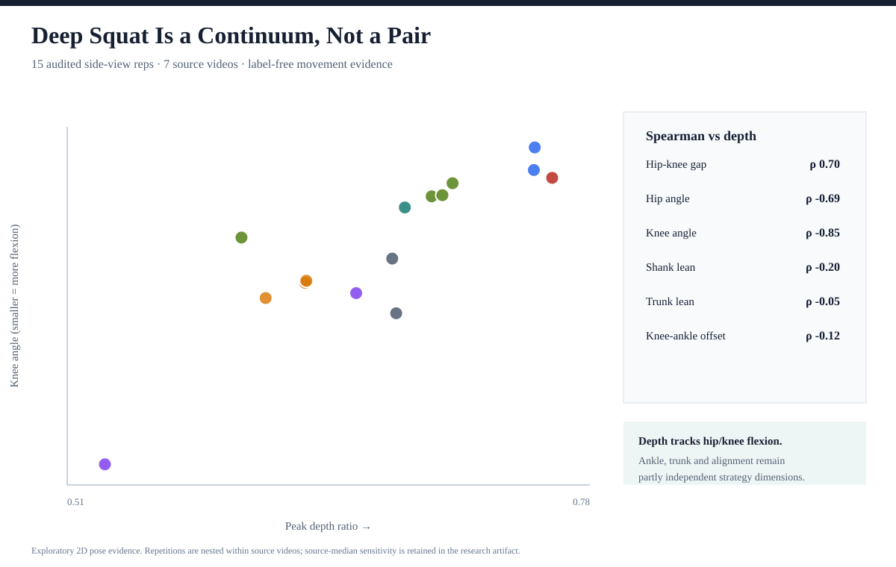
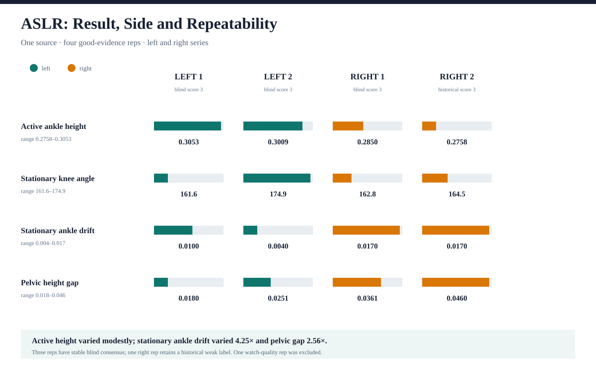
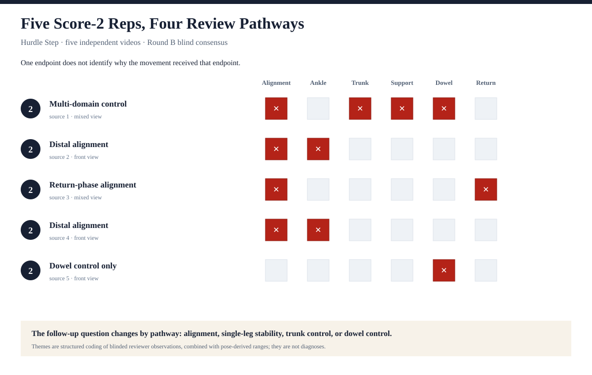
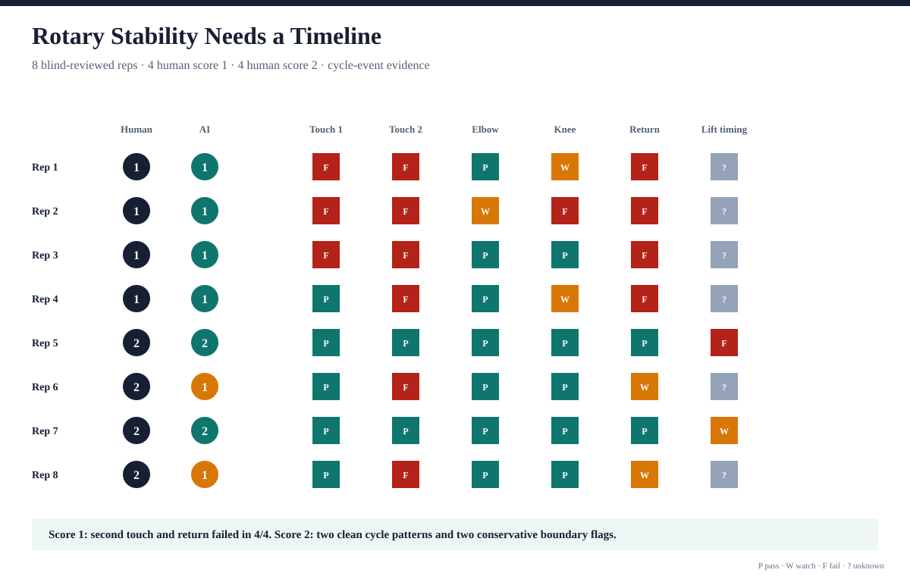

AI-FMS：可解释的人机协同
Functional Movement Screen
视频审核系统开发与 Phase I 评估
目录
摘要
背景：人工 Functional Movement Screen（FMS）评分面临多种实际 限制：现场动作快速结束，细节难以回看；远程与异步复核缺少统一工具；长视频中的 repetition 定位耗时；camera view、side、protocol condition、confidence 与判断 依据不易保存在同一证据链中；人眼能够把握动作整体，却难以稳定记录角度、相对 距离和完整轨迹。本研究的主要目的，是开发并评估一套 AI-assisted、 human-in-the-loop 的 FMS 视频审核系统，为人工评分提供可回放、可解释、可定量、 可拒判和可追踪的辅助证据，而不是替代人工 reviewer。
系统与方法：AI-FMS 以 React/Vite 和 MediaPipe Pose Landmarker 构建，覆盖全部七个 FMS 动作的 video import、rep segmentation、loop playback、 timing correction、人工评分、movement-specific pose features、first-pass AI suggestion、quality gate、adjudication 与 JSON/CSV export。Phase I 从其中四个 动作开展 formative evaluation：28 个唯一源视频、110 个 canonical repetitions， 其中 66 个通过 pose/timing 质量门。两位 reviewer 对平衡选取的 32 条正式样本完成 两轮独立盲评；锁定 AI 通过隔离路径处理同一批样本，并在签名审核完成后才与人工 共识连接。进一步的secondary analysis采用四种动作特异性方法研究顺序分数之外的 定量信息。
结果：七个动作均完成统一的 annotation、pose evidence、 first-pass AI suggestion、human confirmation 和 traceable export workflow， 并通过 340 项自动测试与三个 production builds。Round B 中两位 reviewer 对 32/32 条可评分状态判断一致；在双方均可评分的 26 条中，RAW SCORE 为 26/26 exact。最终锁定 AI 对 28/32 条给出分数；在同时具有 AI 分数与人工数值共识的 25 条中，16/25 exact、23/25 相差不超过 1 分，MAE 为 0.44，linear weighted kappa 为 0.4917。Secondary findings 显示，pose-derived evidence 还能够区分 Deep Squat 连续策略、ASLR 双侧重复性、Hurdle 扣分路径和 Rotary 周期事件。
结论：AI-FMS 已实现一套覆盖七动作、以人工为最终决策者的 AI-assisted FMS 视频审核系统，并在四动作 Phase I 中取得可复现的内部流程、人工 一致性与 AI-human concordance 证据。系统还显示出恢复顺序分数所压缩动作信息的 科研潜力。当前结果支持继续进行 held-out 与 expert-panel 验证，但不支持医疗诊断、 伤病预测、临床准确率或 autonomous scoring 主张。
关键词：Functional Movement Screen；human-in-the-loop；pose estimation；movement quality；video annotation；AI-assisted review；markerless motion analysis；system development；formative evaluation；interpretable AI
1. 引言
1.1 人工 FMS 评分的实际困难
FMS 通过七种动作模式和 0-3 的顺序评分，帮助实践者以统一规则观察动作完成情况。 既有系统综述通常认为 FMS 具有较好的 interrater 与 intrarater reliability，但同时 也提醒研究者区分“评分者能否一致给分”与“分数是否代表某种临床机制或未来伤病”。 Cuchna 等人的 meta-analysis 报告了总体较好的评分可靠性[1]； Bonazza 等人则指出，尽管可靠性结果较好，construct validity 和 injury prediction 仍存在明显限制[2]。更新版 FMS 的视频评分研究也表明，不同 动作的 reliability 并不完全相同[3]。
实际评分的困难不只来自分数的信息压缩。现场动作快速结束，reviewer 可能只能捕捉 一两个显著现象；无法亲临现场、需要远程或异步复核时，动作过程更难被重复观察； 长视频中定位每个 repetition 耗时；不同 rep 的 camera view、side、protocol condition、confidence、pain/clearing 与判断理由也不容易统一保存。人眼擅长理解动作 整体，却难以逐帧稳定记录角度、相对距离和轨迹。视频能够提供暂停、回放和逐 rep 循环，但如果缺少结构化系统，视频本身并不会自动形成可靠、可追踪的审核流程。
1.2 AI 辅助人工审核的系统机会
Markerless pose estimation 可以从普通视频中提取人体关键点，为低成本动作分析提供 基础。BlazePose 针对移动端和 fitness 场景设计了 33 个 body keypoints，并支持对单人 视频进行实时或接近实时的姿态跟踪[4]。单摄像机与开源 pose 系统有潜力降低运动分析门槛；相关研究已经展示了从普通视频预测部分定量运动指标的 可行性[6]，Sports2D 等工具也说明 2D keypoints 可以转化为 可读的关节和肢段角度[8]。
这些技术使构建 AI-assisted review system 成为可能：系统可以自动提出 rep timing、 叠加 pose skeleton、生成动作特异性定量 evidence，并在证据不足时提示人工复核。 关键不是让 reviewer 服从 AI，而是让 reviewer 能够暂停、比较、解释、修正或拒绝 AI suggestion。Human-AI 系统应说明何时有证据、何时不确定，并保持人工能够覆盖 系统输出[10]。
但 markerless measurement 不能被自动等同于 laboratory biomechanics。Camera view、 遮挡、运动模糊、单人/多人主体选择、透视和 out-of-plane movement 都会改变测量质量。 Colyer 等人的综述指出，markerless 技术具有实用潜力，但精度和适用边界必须结合任务 与采集环境判断[5]。Wade 等人进一步强调，部分时空指标 已接近传统系统，但 joint center 和 joint angle 仍不应在缺少 gold-standard comparison 时被当作临床测量[7]。
1.3 系统建成后的进一步科研价值
当视频、rep、pose、人工评分和 AI suggestion 被放入同一可追踪工作流后，系统不仅 能辅助实际评分，还能产生进一步的研究用途。FMS 的 0-3 顺序分数适合快速总结规则 结果，但同一分数可能包含不同的深度、关节贡献、左右稳定性、扣分路径或周期完整度。 因而，恢复 ordinal score 所压缩的 quantitative movement evidence 是系统完成后的 secondary research opportunity，而不是项目最初唯一的问题来源。
1.4 研究目的与主要贡献
本研究按“系统开发、Phase I 评估、进一步科研用途”三个层次提出问题：
- 能否开发一套覆盖全部七个 FMS 动作、适合现场外和异步复核、并由人工保持最终 判断权的 AI-assisted video review system？
- 系统能否把 rep timing、pose features、protocol metadata、人工审核、AI suggestion、quality gate 与 export lineage 连成可复现证据链？
- 在四动作 Phase I 中，人工 blind review 的一致性与 test-retest stability 如何， 锁定 AI 的 coverage、abstention 与 internal concordance 如何？
- 系统保存的 pose-derived evidence 能否进一步揭示顺序分数之外的动作特异性信息？
2. 方法
2.1 Human-centered 设计目标
本研究首先是一项 human-centered system development。设计目标来自人工 FMS 评分中的实际任务，而不是预设某个动作或某一种参数分析。系统需要支持远程与异步 视频审核、减少 rep 定位成本、允许动作回放与 timing correction、保存评分上下文、 提供可解释的 pose evidence、在证据不足时 fail closed，并保留人工最终判断和完整 lineage。各项目标及其实现方式见表 1。
| 人工评分中的困难 | 系统功能 | 预期帮助与边界 |
|---|---|---|
| 无法亲临现场或需要异步复核 | 本地视频导入、匿名 reviewer queue、可恢复状态 | 支持远程与异步工作 |
| 动作快速结束，难以回看细节 | Duration-aware range、逐 rep segment、loop playback | 允许暂停和重复观察 |
| 长视频中寻找 rep 耗时 | Timing detector、draft segmentation、人工 timing correction | 减少定位工作；错误切分仍需人工修正 |
| 人眼难以稳定记录连续量 | MediaPipe overlay、角度、距离、轨迹与动作特异性 features | 增加定量旁证；2D proxy 不是临床量角器 |
| 机位、侧别与 protocol 容易丢失 | Camera view、side、attempt condition、clearing/pain metadata | 保存评分上下文；pain 不由 AI 判断 |
| 遮挡、主体混乱或证据不足 | Pose-quality gate、subject/side QA、watch 与 abstain | 提示 reviewer 复核，不强行输出总分 |
| 第二 reviewer 与争议难以追溯 | Blind Study Mode、append-only events、adjudication、export | 支持独立复核、争议处理与追踪 |
110 canonical reps
stable IDs
camera/timing QA
66 feature-ready
Round A + Round B
32 formal reps
coverage + abstention
post-review join
AI concordance
4 analysis methods
2.2 七动作系统架构与实现范围
AI-FMS 采用统一的 segment-centered architecture：前端 Workbench 负责视频导入、 播放、segment navigation、metadata、人工评分和AI evidence；movement adapter registry 为每个动作提供 timing、features、AI suggestion、side 与 clearing policy； Study Mode 负责与 AI 隔离的盲评；export 与 research pipeline 负责 schema、stable IDs、checksums、SQLite mirror 和可复现分析。七个动作均进入 implemented 状态， 但动作特异性的 evidence 和验证强度分别管理。
| 动作 | Timing / annotation | 主要 pose evidence | AI suggestion | 人工边界 |
|---|---|---|---|---|
| Deep Squat | Rep cycle + floor/board context | Depth、torso、hip/knee/ankle proxies | Staged、可解释、允许 abstain | Protocol 与 pain |
| ASLR | Left/right raise cycle | Active leg、stationary leg、pelvis、side evidence | 侧别与抬腿质量建议 | Side uncertainty |
| Hurdle Step | Forward/return cycle | Clearance、stance leg、pelvis/trunk、alignment | 动态动作质量建议 | Dowel、接触与恢复 |
| In-Line Lunge | Lunge-depth cycle | Depth、trunk/pelvis、rear leg、knee-foot line | 动作质量与侧别建议 | Ankle clearing |
| Shoulder Mobility | Best-reach evidence | Reach distance、visibility、side context | 保守 reach suggestion | Shoulder clearing / pain |
| Trunk Stability Push-Up | Push-up lift event | Lift、body line、arm extension、hip drift | 保守 body-line suggestion | Extension clearing / pain |
| Rotary Stability | Setup-touch-extension-return cycle | 两次触踝、肘膝伸展、离地时序、回位与稳定性 | Cycle 1/2/3 或 abstain | Flexion clearing / pain |
2.3 Phase I 评估范围与 Canonical 数据重建
为在可控范围内评估完整数据治理、人工审核和 AI comparison，Phase I 从七动作中 选择 Deep Squat、ASLR、Hurdle Step 和 Rotary Stability。该选择反映当时可用视频、 pose 与动作多样性，不代表另外三动作缺少产品功能。
研究从 28 个 cumulative history exports 重建 canonical snapshot。相同内容的视频 通过 checksum 去重，最终得到 29 个 ingest、28 个唯一源视频和 110 个 repetitions。 稳定 `videoId`、`ingestId` 和 `repetitionId` 根据内容和 lineage 派生。每条记录保留 动作类型、原 segment、时间范围、camera view、side、protocol metadata、video/pose checksum 及冲突状态。历史人工标签与 legacy AI 仅保留为 provenance，不能作为 当前 AI 规则的输入。
| 动作 | 源视频 | Reps | Blindable | Feature-ready | Formal | Round B consensus |
|---|---|---|---|---|---|---|
| Active Straight Leg Raise | 7 | 17 | 11 | 11 | 8 | 6 |
| Deep Squat | 11 | 34 | 31 | 31 | 8 | 4 |
| Hurdle Step | 7 | 41 | 37 | 16 | 8 | 8 |
| Rotary Stability | 3 | 18 | 18 | 8 | 8 | 8 |
| 合计 | 28 | 110 | 97 | 66 | 32 | 26 |
2.4 Blindability 与 feature-readiness 质量门
所有 110 条 rep 均通过 start/middle/end contact-sheet 审核。画面中的直接数字分数、 明确评分指导、目标人物错误或动作不可见会 fail closed。97 条 rep 被判为 blindable， 13 条因可见分数线索、评分指导或构图不足被排除。历史 `cameraView` 经过 110/110 contact-sheet audit：65 条确认，45 条校正；分析使用独立的 `auditedCameraView`， 不覆盖原始 lineage。
Feature quality gate 综合 pose frame coverage、missing-frame ratio、landmark visibility、timing cycle completeness、camera-view applicability 及多人物场景的目标 主体/ROI QA。最终 66 条 feature-ready，44 条 limited。58 条同时通过 blindability 和 feature-readiness，正式样本从该池按动作平衡、源视频分散和固定策略冻结为 32 条。 这一选择不是对完整 110-rep pool 的 simple random sample。
| Evidence tier | Reps | 用途 |
|---|---|---|
gold_consensus |
26 | Round B 两位 blind reviewers 均可评分且同分 |
formal_unscorable |
6 | 双方均判为无法按 protocol 独立评分 |
expansion_candidate |
26 | 同时通过双门槛但未进入正式审核 |
feature_ready_not_blindable |
8 | 可用于无标签 feature analysis，不可进入 blind study |
blindable_feature_limited |
39 | 可观看，但 timing/pose evidence 不足 |
not_blindable_feature_limited |
5 | 两类门槛均未通过 |
2.5 双轮人工盲评
两位 reviewer 分别完成 Round A 和 Round B。第二轮在约 51 小时后进行，使用重新 随机的队列和独立存储 namespace。两轮均不显示源文件名、历史分数、AI suggestion、 pose-derived features、上一轮答案、另一 reviewer 答案或音频。Reviewer 可选择 0-3 RAW SCORE 或 `unscorable`。`0` 仅代表已观察或报告的 pain；动作、机位或 protocol 条件不足必须记录为 `unscorable` 及原因。
Review events 为 append-only；修改产生新 event 并通过 `supersedesEventId` 关联。 每份导出均与 SHA-256 配对，并经 schema、manifest、completion 和 blind-state validation 后幂等写入本地 SQLite。RAW SCORE agreement、MAE、confusion matrix 与 weighted Cohen's kappa 仅使用双方均给出数值分数的 reps。Weighted kappa 用于 对有序分值的不同距离赋予不同权重[9]。

2.6 Pose-derived features 与锁定 AI
MediaPipe Pose Landmarker 生成 time-aligned landmarks。Action adapters 在脱敏后 的 pose payload 上提取 normalized distances、2D angles、trajectory proxies 和 cycle events。建议规则不接收 score-bearing filename、notes、历史分数、reviewer comments 或 legacy AI。早期 workflow 中 92 条 numeric AI suggestions 被标记为 `label-leakage-ineligible`，不进入任何 agreement 或 validation。
Frozen AI v1.0 在 Round B 前锁定；Final AI v1.1 在查看 Round B 结果前锁定，但其 开发发生在 Round A 之后。因此 v1.1 只能称为 post-audit internal benchmark。AI 分析全部 32 条不等于强制给 32 个分数；当 Deep Squat floor attempt 缺少 FMS staged follow-up 时，系统保持 abstain。
2.7 Secondary quantitative analyses
完成系统与 Phase I 主要评估后，本研究进一步检验系统是否能够支持传统顺序分数 之外的科研分析。四个动作并未套用同一个 pairwise template；分析问题、单位和方法 由动作结构及可用证据决定：
| 动作 | 研究问题 | 方法 | 分析单位 |
|---|---|---|---|
| Deep Squat | 深度是否决定完整动作策略？ | 侧视连续谱、rep-level Spearman 与 source-median sensitivity | 15 reps / 7 videos |
| ASLR | 相似结果在左右侧与重复动作中是否稳定？ | 同源 bilateral repeatability series | 4 good reps |
| Hurdle Step | 同为 2 分是否代表同一种扣分原因？ | Blind comments 主题编码与 quantitative ranges | 5 reps / 5 videos |
| Rotary Stability | 单一峰值帧能否表达复杂动作顺序？ | Full-cycle event matrix | 8 blind-reviewed reps |
2.8 伦理、隐私与数据边界
Phase I pilot 使用既有本地和公开教学/reference videos，没有前瞻性招募 研究参与者，也没有收集人口统计、临床诊断或 injury outcome。不同研究来源的 公开与再发布权利尚未完全统一。为准确展示系统，Workbench 与 Study Mode 图 另使用 2026-08-23 项目自采、取得参与者与场地许可的演示视频；该视频不进入 Phase I 数据或 benchmark。截图不显示源文件名、身份或历史评分。Raw videos、 未选取的可识别帧、raw pose、reviewer comments、签名 exports 和 SQLite 均保持 私有。正式投稿前仍需向目标期刊书面确认 secondary-video research 所需的 SRC/IRB/exemption/consent 材料。
3. 结果
3.1 七动作系统实现与工程验证
AI-FMS 已从单动作 prototype 扩展为统一的七动作系统。Workbench 可以完成视频导入、 duration-aware range、rep segmentation、loop playback、timing correction、camera view/side/protocol/clearing metadata、人工评分、pose overlay、movement-specific features、first-pass AI suggestion、adjudication 和 dataset export。Study Mode 提供 与 AI 隔离的匿名 queue、append-only events、resume、blind-state validation 和签名 JSON/SHA-256 export。Video Manager 与 manifest tools 支持候选视频治理和资产 readiness。七动作 adapter 与 evidence gate 均通过统一 smoke path；完整质量门包含 340 项自动测试、lint、format 和 Workbench、Study Mode、Video Manager 三个 production builds。测试数量只证明工程流程可重复，不代表科学或临床有效性。

3.2 Phase I 数据与质量输出
Phase I 构建了 110-rep canonical pool、97 条 blindable、66 条 feature-ready、 58 条双门槛候选和 32 条正式盲审样本。全部正式样本同时通过 blindability 与 feature-readiness。该层级化结果说明系统能够保留 limited 与 excluded evidence， 而不是只输出经过筛选的成功案例。
3.3 人工一致性与复测稳定性
Round A 中两位 reviewer 的 outcome agreement 为 31/32。双方均可评分的 26 条 全部同分；5 条双方均为 unscorable，另有 1 条 scoreability mismatch。Round B 中 outcome agreement 提高到 32/32；双方均可评分的 26 条仍为 26/26 exact，6 条双方 均 unscorable 且 reason taxonomy 6/6 一致。两位 reviewer 各有 1 条数值分变化， 且发生在同一条 Hurdle Step。由于可比较分数完全一致，Round A 与 Round B 的 linear 和 quadratic weighted kappa 均为 1.0000。
| 指标 | Round A | Round B |
|---|---|---|
| Completed reviews | 32 / reviewer | 32 / reviewer |
| Status agreement | 31/32 | 32/32 |
| Jointly scorable | 26 | 26 |
| RAW SCORE exact | 26/26 | 26/26 |
| Both unscorable | 5 | 6 |
| Unscorable reason exact | 2/5 | 6/6 |
| Linear weighted kappa | 1.0000 | 1.0000 |
3.4 AI-Human Internal Concordance
Final AI v1.1 对正式 32 条中的 28 条给出 RAW SCORE，对 4 条 Deep Squat staged floor attempt 保持 abstain。人工 Round B 形成 26 条数值共识，AI 与人工数值共识的 交集为 25 条。整体 exact agreement 为 16/25，within-one agreement 为 23/25， MAE 为 0.44，linear weighted kappa 为 0.4917。按动作看，Deep Squat 当前只有 3 条可比较，不能因 3/3 exact 作强泛化；Hurdle 的主要差异集中在 2/3 边界；ASLR 存在少数严重低估；Rotary 有两条保守的 AI 1 / human 2 差异。
| 动作 | Comparable | Exact | Within one | MAE |
|---|---|---|---|---|
| ASLR | 6 | 4/6 | 4/6 | 0.6667 |
| Deep Squat | 3 | 3/3 | 3/3 | 0.0000 |
| Hurdle Step | 8 | 3/8 | 8/8 | 0.6250 |
| Rotary Stability | 8 | 6/8 | 8/8 | 0.2500 |
| Overall | 25 | 16/25 | 23/25 | 0.4400 |
3.5 系统进一步解锁的定量科研用途
在完成七动作系统实现和四动作 Phase I 主要评估后，系统保存的连续 pose evidence 进一步支持以下四种探索性研究。它们是系统的 secondary research contribution， 不取代前述产品开发与评估结果。
3.5.1 Deep Squat：动作策略是连续谱
从 31 条 feature-ready Deep Squat 中保留 15 条审计后的 side-view reps，覆盖 7 个源视频。分析不使用人工分数，以 `peakDepthRatio` 为连续参考轴，同时计算 rep-level Spearman correlation 与按源视频取 median 后的 sensitivity。深度与 `kneeAngleDegrees`、`hipAngleDegrees` 和 `hipKneeVerticalGap` 呈较强方向关系； `ankleShankLeanDegrees`、`trunkLeanDegrees` 和 `maxKneeAnkleOffset` 与深度的 关系较弱或在 rep/source 层方向不稳定。
| Feature vs depth | Rep-level rho | Source-median rho | 解释 |
|---|---|---|---|
hipKneeVerticalGap |
0.700 | 0.750 | 深度增加时髋部相对膝部更低 |
hipAngleDegrees |
-0.689 | -0.821 | 深度与髋屈曲方向一致 |
kneeAngleDegrees |
-0.850 | -0.929 | 深度与膝屈曲关系最稳定 |
ankleShankLeanDegrees |
-0.204 | -0.107 | 与深度关系较弱 |
trunkLeanDegrees |
-0.050 | 0.464 | 受来源影响，方向不稳定 |
maxKneeAnkleOffset |
-0.118 | -0.214 | 保留独立对线信息 |

3.5.2 ASLR：从单次高度转向左右侧与重复性
一个五-rep 源视频中，四条通过 `good` side/peak gate，一条 `watch` 被排除。 四条 good rep 均保留历史 3 分，其中三条另有稳定 blind consensus，剩余一条为 historical weak-label evidence。四条 active ankle height 只跨 0.2758-0.3053， 但 stationary ankle drift 跨 4.25 倍，pelvic gap 跨 2.56 倍。按侧别取平均后， 右侧 active height 低约 7.5%，stationary ankle drift 约为左侧的 2.4 倍， pelvic gap 约为 1.9 倍。
| Rep | Active height | Stationary knee | Ankle drift | Pelvic gap | Label evidence |
|---|---|---|---|---|---|
| Left 1 | 0.3053 | 161.6 | 0.0100 | 0.0180 | Stable blind consensus |
| Left 2 | 0.3009 | 174.9 | 0.0040 | 0.0251 | Stable blind consensus |
| Right 1 | 0.2850 | 162.8 | 0.0170 | 0.0361 | Stable blind consensus |
| Right 2 | 0.2758 | 164.5 | 0.0170 | 0.0460 | Historical weak label |

3.5.3 Hurdle Step：同为 2 分，却有不同 review pathway
Round B 中有五条来自五个不同视频的 Hurdle rep 被两位 reviewer 一致判为 2 分。 对 blind comments 进行结构化主题编码，并连接 pose-derived ranges 后，识别出四种 pathway：多领域控制、远端对线、回收阶段对线和单独的 dowel control。五条动作的 `peakClearance` 跨 1.43 倍，`stepKneeLineOffset` 跨 10.12 倍， `trunkCenterOffset` 跨 11.43 倍。
| Pathway | Reps | Blind observation pattern | Quantitative context |
|---|---|---|---|
| Multi-domain control | 1 | 对线、躯干、支撑腿和 dowel 同时出现问题 | Trunk offset 0.0263，接近五条最高值 |
| Distal alignment | 2 | 躯干与支撑腿稳定，但膝踝/脚踝内移 | Clearance 0.2061-0.2413 |
| Return-phase alignment | 1 | 峰值阶段完成，收腿阶段出现膝踝对线变化 | Clearance 0.2956，为五条最高 |
| Dowel control only | 1 | 下肢和躯干稳定，主要问题为杆与栅栏不平行 | Clearance 0.2225；trunk offset 0.0084 |

3.5.4 Rotary Stability：完整周期事件矩阵
Rotary 由 setup、第一次触踝、伸展、第二次触踝、回位和离地时序组成。八条正式 rep 包含四条人工 1 分和四条人工 2 分。人工 1 分组的第二次触踝与回位均为 4/4 fail； 人工 2 分组的第一次触踝和肘膝伸展均保留，但其中两条在第二次触踝/回位仍有边界 证据，AI 因而保守提示 1 分。
| Human score | First touch | Second touch | Elbow extension | Knee extension | Return | AI scores |
|---|---|---|---|---|---|---|
| 1 | 1 pass / 3 fail | 4 fail | 3 pass / 1 watch | 1 pass / 2 watch / 1 fail | 4 fail | 4 × score 1 |
| 2 | 4 pass | 2 pass / 2 fail | 4 pass | 4 pass | 2 pass / 2 watch | 2 × score 2；2 × score 1 |

3.6 历史标签审计与数据复用
正式 32 条还被用于审计历史评分。25 条在两轮盲评中保持稳定数值共识，其中 18 条 与历史标签 exact，6 条稳定不一致，1 条历史分数缺失。只有 18 条可以标记为 `audited weak labels`；其余历史标签继续用于 provenance、抽样和假设生成，不能升级 为 gold labels。该结果说明前期 110-rep 工作可以继续产生价值，但 32 条目的性平衡 样本不能证明全部历史标签有效。
4. 讨论
4.1 主要贡献：七动作 AI 辅助人工审核系统
本研究的首要贡献是完成了一套面向 FMS 视频评分全过程的 human-in-the-loop 系统， 而不是只针对四个动作建立参数分析。七个动作共享统一的 video-to-rep workflow、 pose evidence、first-pass AI suggestion、human confirmation、quality gate 和 traceable export；动作特异性的 timing、features、side 和 clearing policy 通过 adapter registry 管理。系统因此既能服务实际审核，也能为后续研究保存结构化数据。
这一贡献的关键不是“所有动作都强行给分”，而是让每个动作都进入可测试、可解释、 可人工校准的流程。Protocol condition、pain 和 clearing 仍由人工确认；侧别建议不 静默覆盖 reviewer；pose evidence 不足时系统可以 watch 或 abstain。七动作功能覆盖 与七动作同等外部验证是两个不同问题，本文只主张前者已经实现。
4.2 对人工 FMS 视频评分的实际帮助
AI-FMS 将一次性现场观察转换为可暂停、回放、逐 rep 循环和可追踪的审核流程。自动 draft segmentation 降低长视频中定位动作的成本，人工 timing correction 保留最终 控制权；camera view、side、protocol、confidence 和 comments 保存评分上下文； pose overlay、angles、distances 和 trajectories 提供人眼难以稳定记录的定量旁证； append-only review events 和 signed exports 支持第二 reviewer、adjudication 和 事后复核。这些功能说明系统的实用目标比“同分信息恢复”更广。
4.3 Phase I 如何评估系统
Phase I 选择四个动作，不是因为系统只支持四个动作，而是为了在可控范围内完成 canonical data、双轮人工盲评、locked AI comparison 和定量分析。两位 reviewer 在 Round B 对全部可评分状态和共同可评分分数达到完全一致，说明在本样本、本 protocol training 和本研究条件下，人工流程具有较高内部稳定性。但两位 reviewer 不能代表 certified expert panel，也不能推断不同背景 reviewer population 的 reliability。
Final AI 的 16/25 exact 和 23/25 within one 提供了一个有边界的 internal benchmark。它说明当前规则可为多数正式样本提供与人工相同或相邻的 first-pass suggestion；同时，ASLR 的少数大偏差、Hurdle 的 2/3 边界和 Deep Squat staged protocol abstention 都表明 AI 不能替代 reviewer。Final v1.1 接触过 Round A 后的 开发过程，因此不能用同一 32 条宣称 held-out accuracy。
4.4 系统进一步解锁的科研价值
在系统功能和主要评估之外，四动作分析揭示了第二层价值：顺序分数所压缩的信息并不 只有一种。Deep Squat 主要表现为连续关节贡献与动作策略；ASLR 表现为左右侧与 repeatability；Hurdle Step 表现为到达同一分数的不同扣分路径；Rotary Stability 表现为事件顺序与周期完整度。统一的 FMS 分值便于规则决策，而动作特异性的定量 evidence 能进一步回答“动作是如何完成的”。
| 动作 | 顺序分数压缩的信息 | AI-FMS 恢复的研究对象 |
|---|---|---|
| Deep Squat | 连续关节贡献与动作策略 | 深度轴与踝、躯干、对线等相对独立维度 |
| ASLR | 左右侧差异与重复动作稳定性 | Bilateral profile 与 repeatability |
| Hurdle Step | 到达同一分数的不同扣分原因 | Review pathway 与定向 follow-up |
| Rotary Stability | 事件顺序、周期完整度与边界证据 | Cycle-level temporal evidence |
4.5 Abstention 与质量门是系统能力
在自动评分叙事中，coverage 经常被误解为“所有样本都必须给分”。本研究将 evidence quality 与 score availability 分开。当 Deep Squat floor attempt 未满足最高分且没有 heels-elevated follow-up 时，规则无法确定最终 staged score；合理行为是 abstain， 而不是根据单段 pose 强行猜测。类似地，ASLR active-side/peak gate 和 Hurdle camera-view applicability 也要求系统明确说明证据边界。
4.6 工程贡献与研究贡献的关系
AI-FMS 的工程贡献不是单一模型，而是把 video、rep、pose、human review、AI suggestion、quality gate 和 export 连接成可追踪流程。稳定 ID、append-only events、 signed JSON/SHA-256、SQLite idempotency、manifest 与生成脚本使结果能够回到具体 证据。该设计遵循 human-AI interaction 中“让用户理解系统能力与限制、支持纠正和 保持人工控制”的一般原则[10]。
研究贡献则来自该流程能够保存传统分数之外的信息。换言之，工程系统使定量观察 可追溯，动作分析再把这些观察转化为可检验的问题。两者共同形成从产品 prototype 到 exploratory research 的闭环。
4.7 主要限制
- Sampling：110 reps 嵌套于 28 个源视频，不是 110 名独立 participants；动作、机位和来源分布不平衡。
- Reviewer：只有两位 reviewer，且没有 certified expert panel； 不能把内部一致性外推到专业群体。
- Measurement：2D pose 受 camera view、遮挡、透视、服装、主体 选择和 landmark jitter 影响；当前 features 是 video-derived proxies，不是临床 goniometric measurement。
- Validation：Final AI 在 Round A 后开发，不是 held-out；Round B 也没有展示 AI evidence，因此不能检验 AI 是否提高人工效率、信心或准确性。
- Case analyses：Deep Squat reps 嵌套于 7 个视频；ASLR series 只有一个来源且含一条 weak label；Hurdle pathways 来自人工主题编码；正式 Rotary subset 只来自两个视频。
- Ethics and rights：Phase I 来源视频的再发布授权不完全一致，当前不能公开原视频、可识别帧、 raw pose 或 reviewer comments。两张界面图使用另行拍摄并取得同意的演示 素材，不改变研究数据的发布边界。
4.8 下一阶段研究
下一阶段不应盲目增加 rep 数，而应围绕已识别的问题采集独立证据：使用主体明确、 side 与 peak 可见的 ASLR 视频验证 bilateral profile；使用完整轨迹和清晰 dowel 的 Hurdle 视频验证 pathway；使用手脚无遮挡、board alignment 可见的 Rotary 视频验证 cycle events；并以新的 source video 或 participant 为分组单位冻结 held-out set。
此外，可引入更多 reviewer 或 certified expert panel。如果要检验 AI 对人工审核的 实际帮助，应另设 evidence-assisted controlled study，将盲评组与可见 AI evidence 组分开，预先定义 accuracy、confidence、time 和 correction outcomes。
5. 结论
本研究开发并实现了 AI-FMS：一套覆盖全部七个 FMS 动作、由人工保持最终判断权的 AI-assisted video review system。系统把视频导入、rep segmentation、loop playback、 timing correction、protocol metadata、pose-derived quantitative evidence、 first-pass AI suggestion、quality gate、人工审核、adjudication 和 traceable export 连接成统一流程。七动作均完成主要产品功能，并允许在证据不足时 watch 或 abstain。
四动作 Phase I 为系统提供了内部评估证据：两位 reviewer 在 Round B 对 32/32 条 可评分状态判断一致，并在共同可评分的 26 条中全部同分；最终锁定 AI 对 28/32 条 给出分数，与人工数值共识交集的 25 条中，16 条 exact、23 条 within one。进一步的 secondary analyses 表明，系统还能够保存传统顺序分数之外的连续策略、双侧重复性、 扣分路径和周期事件信息。
因此，AI-FMS 的主要价值是辅助人工更方便、更可重复、更定量和更可追踪地完成 FMS 视频评分；其进一步科研价值是把评分过程中原本会被压缩的信息转化为可检验的 movement evidence。当前结果不支持医疗诊断、伤病预测、临床推广或 autonomous FMS scoring，但为 held-out validation、expert review 和 responsible sports technology research 建立了可复现基础。
声明、伦理与数据可用性
作者贡献（待人工确认）
Ronnie：[研究问题与项目动机、FMS protocol 学习、研究设计参与、Reviewer A 盲评、 结果解释、论文撰写与最终批准，待逐项确认]。Other Reviewer：[独立盲评、方法和 结果审阅，是否满足作者资格待确认]。成人 advisor：[监督、伦理与权利审核、关键 学术审阅及通信职责，待确认]。
AI 使用披露
MediaPipe Pose Landmarker 被用于 pose estimation。OpenAI Codex 作为 AI coding agent，被用于辅助软件实现、可复现数据流程、分析脚本、研究图表，以及内部文档的 起草或编辑。人类参与者确定研究方向、完成盲评、检查证据与输出、解释结果，并对 提交的工作承担责任。Codex 不是作者。正式投稿前将根据目标期刊书面回复调整披露 格式，但不会淡化 AI 实际参与范围。医学期刊编辑规范同样强调，AI 工具不能承担 作者责任，使用方式应透明披露[11]。
伦理审批与同意
本研究没有前瞻性招募参与者，也没有收集人口统计或临床结局。Pilot 使用既有本地 和公开 instructional/reference videos。正式投稿前将向 NHSJS 书面确认 secondary video analysis 所需的 SRC、IRB、exemption、consent 和 rights documentation。 在确认前，本稿不声称伦理审查豁免。
数据与代码可用性
Source code、schema、聚合图和 public-safe methods 可在 rights/privacy 审核后通过 GitHub release 提供。Raw videos、未获授权的可识别帧、raw pose landmarks、reviewer comments、signed exports 和本地 SQLite 不公开。两张界面截图中的固定视频帧已于 2026-08-23 替换为项目自有并取得 同意的演示画面；这些截图可以进入投稿稿件，但对应 raw video 与 raw pose 继续保持私有。Canonical data 与分析输出通过稳定 ID、 SHA-256、manifest 和生成脚本保存于 private research archive。
利益冲突与资金
[待人工作者确认。当前草稿未记录外部商业资助或利益冲突。]
致谢
感谢参与独立盲评、FMS protocol 讨论、数据审核和项目复核的人员。正式致谢名单需在 获得本人同意后填写。
参考文献
- Cuchna JW, Hoch MC, Hoch JM. The interrater and intrarater reliability of the Functional Movement Screen: a systematic review with meta-analysis. Physical Therapy in Sport. 2016;19:57-65. doi:10.1016/j.ptsp.2015.12.002.
- Bonazza NA, Smuin D, Onks CA, Silvis ML, Dhawan A. Reliability, validity, and injury predictive value of the Functional Movement Screen: a systematic review and meta-analysis. American Journal of Sports Medicine. 2017;45(3):725-732. doi:10.1177/0363546516641937.
- Morgan R, LeMire S, Knoll L, et al. The Functional Movement Screen: exploring interrater reliability between raters in the updated version. International Journal of Sports Physical Therapy. 2023;18(3):737-745. doi:10.26603/001c.74724.
- Bazarevsky V, Grishchenko I, Raveendran K, Zhu T, Zhang F, Grundmann M. BlazePose: on-device real-time body pose tracking. arXiv:2006.10204. doi:10.48550/arXiv.2006.10204.
- Colyer SL, Evans M, Cosker DP, Salo AIT. A review of the evolution of vision-based motion analysis and the integration of advanced computer vision methods towards developing a markerless system. Sports Medicine - Open. 2018;4:24. doi:10.1186/s40798-018-0139-y.
- Kidziński L, Yang B, Hicks JL, Rajagopal A, Delp SL, Schwartz MH. Deep neural networks enable quantitative movement analysis using single-camera videos. Nature Communications. 2020;11:4054. doi:10.1038/s41467-020-17807-z.
- Wade L, Needham L, McGuigan P, Bilzon J. Applications and limitations of current markerless motion capture methods for clinical gait biomechanics. PeerJ. 2022;10:e12995. doi:10.7717/peerj.12995.
- Pagnon D, Kim H. Sports2D: compute 2D human pose and angles from a video or a webcam. Journal of Open Source Software. 2024;9(101):6849. doi:10.21105/joss.06849.
- Cohen J. Weighted kappa: nominal scale agreement with provision for scaled disagreement or partial credit. Psychological Bulletin. 1968;70(4):213-220. doi:10.1037/h0026256.
- Amershi S, Weld D, Vorvoreanu M, et al. Guidelines for Human-AI Interaction. In: Proceedings of the 2019 CHI Conference on Human Factors in Computing Systems. 2019:1-13. doi:10.1145/3290605.3300233.
- International Committee of Medical Journal Editors. Use of Artificial Intelligence in Publishing: Use of AI by Authors. Accessed 2026-08-17. https://www.icmje.org/recommendations/browse/artificial-intelligence/ai-use-by-authors.html.
注：正式投稿前，以上参考文献须由人类作者逐篇打开、阅读、确认引用语境，并按 NHSJS numerical citation format 生成匿名标准引用版与 online-citation 版。
附录 A：动作特征与质量门
| 动作 | 主要 pose-derived evidence | 主要质量门 | 解释边界 |
|---|---|---|---|
| Deep Squat | Depth ratio、hip-knee gap、hip/knee angle、trunk lean、shank lean、knee-ankle offset | Side/front applicability；完整最低点与回位；floor/board condition | 2D proxy，不等同关节活动度诊断 |
| ASLR | Active ankle height、peak elevation、moving/stationary knee、stationary ankle drift、pelvic gap | Active-side stability；peak window；主体选择；遮挡 | 不能把一条 weak-label rep 当作 blind gold |
| Hurdle Step | Peak clearance、knee geometry、line offset、trunk center offset、hip-height gap、ankle drift | Camera-view applicability；完整前进与回收；目标人物 | Pathway 为人工编码，不是病因分类 |
| Rotary Stability | First/second touch、elbow/knee extension、lift timing、return/balance、trunk displacement | Core-cycle visibility；criterion-specific visibility；clearing/pain | 正式样本来源少，触踝 proxy 保守 |
附录 B：分析分母与问题对应
| 数字 | 代表什么 | 不能被用来证明什么 |
|---|---|---|
| 110 | 完整 canonical repetitions | 不是 110 名参与者，也不是 110 个 gold labels |
| 97 | 通过 blindability gate | 不代表 pose evidence 可靠 |
| 66 | 通过 pose/timing feature gate | 不代表具有人工 gold score |
| 58 | 同时通过 blindability 与 feature gate | 不是最终 formal sample |
| 32 | 平衡冻结的双轮 blind formal sample | 不是对 110 的 simple random proof |
| 26 | Round B 双方均可评分且同分 | 不包含 unscorable，也不等同 expert panel |
| 28 | Final AI 有分数的正式样本 | 不代表 28 条都可与人工数值比较 |
| 25 | Final AI 与人工数值共识交集 | 不是 held-out evaluation set |
| 18 | 与稳定双轮共识 exact 的 audited weak labels | 不能升级其余历史标签 |
附录 C：论文主张控制
| 主题 | 可以说 | 不能说 |
|---|---|---|
| 平台能力 | 七动作均有 first-pass pose-based AI suggestion workflow | 七动作已经达到相同验证成熟度 |
| 人工结果 | 两位 reviewer 在本正式样本中高度一致 | 已经证明临床或跨群体 reliability |
| AI 结果 | 在 25 条内部可比较样本中 16 exact、23 within one | 64% accuracy、临床准确率或 held-out performance |
| 动作发现 | 顺序分数压缩了动作特异性的连续与时间信息 | 已经识别 validated impairment subtype |
| 功能解释 | 可提出 mobility、stability、coordination 的复核假设 | 诊断功能障碍、疼痛原因或伤病风险 |
| Round B | 第二次独立盲评与 test-retest evidence | AI evidence 提高了人工效率或信心 |
| Zenodo | 经允许后的 publicly available preprint | peer-reviewed publication |
附录 D：主要复现命令
npm run data:pilot:build
npm run data:pilot:features
npm run data:pilot:camera-views
npm run data:pilot:features:camera-audited
npm run data:pilot:utilization
npm run data:pilot:profiles:label-free
npm run study:profiles:round-a
npm run study:ai-evidence:round-a
npm run study:evidence:round-b
npm run study:rotary:v1-1
npm run study:ai:final-v1-1
npm run study:labels:audit
npm run release:phase-i:figures
npm run release:phase-i:manifest
npm run check需要签名 reviewer exports 的 closeout 命令只在 private research environment 中运行。 Raw media、raw pose 和本地 SQLite 不属于公开复现包。